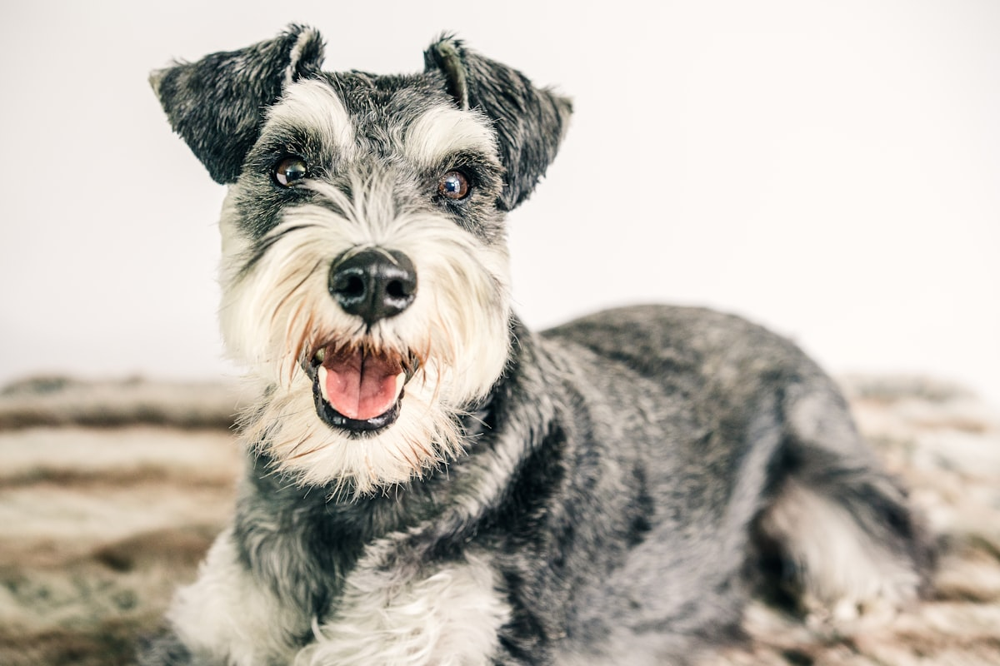

미니어처 슈나우저 키우기 가이드 — 수명 13.3년의 근거와 췌장염 관리

영국 584,734마리 코호트(McMillan 2024, Scientific Reports)에서 미니어처 슈나우저 7,446마리의 중앙 수명은 13.3년(95% CI 13.2~13.5년)으로, 교배종 12.0년보다 깁니다. 수염과 눈썹이 매력인 "작은 신사"는 충성심 강하고 씩씩한 데다 털빠짐까지 적지만, 꼭 알아야 할 특징이 하나 있습니다 — 기름진 음식에 유독 약하다는 것. 이 글은 그 수명 숫자가 어디서 나왔는지, 국내 진료기록에서 이 품종이 어디쯤인지까지 근거를 붙여 정리했습니다.
한눈에 보는 슈나우저
| 크기 | 소형견 — FCI 표준 체고 30~35cm, 체중 약 4~8kg (영국 진료기록 성견 평균 9.9kg) |
|---|---|
| 수명 | 영국 자료 중앙값 13.3년 (95% CI 13.2~13.5년, n=7,446) — 근거는 아래 |
| 털빠짐 | 매우 적음 (정기 미용 필수) |
| 활동량 | 중상 (씩씩하고 에너지 많음) |
| 성격 | 충성심 강함, 경계심 있음, 명랑 |
| 초보자 적합도 | 중상 (식이 관리 원칙만 지키면 무난) |
"수명 13.3년"은 어디서 나온 숫자인가
McMillan 등(2024, Scientific Reports)은 영국 584,734마리, 155개 품종의 생존 곡선을 그렸습니다. 미니어처 슈나우저는 7,446마리(생존 5,469·사망 1,977)가 포함됐고, 카플란-마이어 추정 중앙 수명이 13.3년(95% CI 13.2~13.5년), 사망 위험비는 교배종 대비 0.70(0.67~0.73)이었습니다. 교배종의 중앙 수명은 12.0년, 순종 전체는 12.7년이니 이 품종은 평균보다 오래 사는 쪽입니다.
같은 영국인데 다른 숫자도 있습니다. VetCompass 진료기록으로 2013년 한 해 미니어처 슈나우저 3,857마리를 본 O'Neill 등(2019)에서는 중앙 수명이 11.6년(IQR 9.3~13.1년)입니다. 1.7년 차이는 계산법 때문입니다 — 이 연구는 그해 죽은 개의 나이만 모았고, McMillan 팀은 아직 살아 있는 개까지 넣어 생존 곡선으로 추정했습니다. 살아 있는 개를 빼면 숫자는 낮게 나옵니다. 웹에 흔한 "12~15년"은 대개 출처 표기가 없는 숫자이니, 두 영국 숫자가 왜 다른지 아는 편이 훨씬 쓸모 있습니다. 물론 둘 다 영국 사육환경·의료 접근성 기준이라 국내에 그대로 옮길 수는 없습니다.
성격과 기질
슈나우저는 가족에게 깊이 붙는 충성형입니다. 보호자를 잘 따르고 놀이를 좋아하며, 소형견치고 겁이 없고 씩씩합니다. 본래 농장에서 쥐를 잡고 집을 지키던 품종이라 경계심과 영역 의식이 있어 낯선 소리에 짖을 수 있어요 — 어릴 때 사회화가 중요합니다.
고집이 살짝 있는 편이지만 머리가 좋아서, 일관된 규칙과 칭찬 기반 훈련이면 잘 따라옵니다.
입양 전 현실 체크 — 돈과 시간
슈나우저를 데려온 뒤 가장 많이 듣는 후회는 질병이 아니라 미용비입니다. 털이 빠지지 않는다는 장점은 곧 "털이 계속 자란다"는 뜻이고, 평생 4~6주마다 미용실에 가야 한다는 의미거든요. 아래는 질병 없이 건강하게 지낼 때의 대략적인 월 고정비입니다. (지역·업체·병원마다 차이가 크니 감을 잡는 용도로만 보세요.)
| 사료 | 월 3~5만 원 (저지방 위주, 체중 5~9kg 기준) |
|---|---|
| 전체 미용 | 회당 4~7만 원 × 4~6주 간격 → 월 3~7만 원 |
| 예방약 | 월 2~3만 원 (심장사상충·외부기생충·구충) |
| 간식·배변용품 | 월 2~3만 원 |
| 합계(대략) | 월 10~18만 원 + 연 1회 건강검진 10~20만 원 |
여기에 변수가 하나 더 있습니다. 슈나우저가 기름진 음식을 먹고 급성 췌장염으로 입원하면 며칠 치료만으로도 수십만 원이 나갑니다. 뒤에 나올 식이 원칙이 곧 비용 관리이기도 합니다. 보험을 고민 중이라면 가입 전 체크리스트를 먼저 읽어보세요.
하루에 드는 시간은 산책 30분~1시간, 실내 놀이 15분, 빗질 5분(주 2~3회), 그리고 식사할 때마다 수염 닦기입니다. 대형견처럼 시간을 크게 잡아먹진 않지만 "수염 관리"라는 자잘한 루틴이 매일 붙는다는 점은 미리 알아두세요.
아파트·원룸은 체격만 보면 충분합니다. 진짜 변수는 짖음이에요. 농장에서 집을 지키던 품종이라 복도 발소리나 초인종에 반응합니다. 층간·벽간 소음이 예민한 집이라면 입양 첫 달부터 짖음 관리를 시작한다는 전제로 결정하세요.
혼자 있는 시간은 보호자에게 밀착하는 성격 탓에 무한정 늘리기 어렵습니다. 어릴 때부터 짧게 나갔다 오는 연습을 쌓으면 하루 8시간 근무도 감당하는 개체가 많지만, 연습 없이 갑자기 종일 혼자 두면 짖음이나 파괴 행동으로 나타나기 쉽습니다. (분리불안 자가진단과 단계별 훈련)
주의해야 할 질병 — 식이가 절반입니다
- 고지혈증·췌장염 — 이 품종의 대표 주의점이고, 근거도 가장 탄탄합니다. 원인 불명의 고중성지방혈증이 이 품종에 많아, 미국 조사에서는 6세까지 40% 이상이 해당됐습니다 (Genes 2024, 원자료 Xenoulis 2007). 영국 UFAW 도 "약 3분의 1"이 비정상 고중성지방이며 중년 이후 악화한다고 정리합니다 (UFAW). MSD 수의 매뉴얼은 중성지방 500 mg/dL 이상을 개 췌장염의 위험 인자로 꼽고, 미니어처 슈나우저가 췌장염 환자 중 "극적으로 과대 대표"된다고 적습니다. 흔한 방아쇠는 식이 부주의(기름진 사람 음식)이고, 치료 성공에는 1,000kcal당 지방 20g 미만의 저지방 식단이 핵심이라는 것도 같은 문서의 내용입니다. 구토·복통·식욕부진이 함께 오면 바로 병원에 가세요.
- 요로결석(칼슘옥살레이트) — UFAW 가 인용한 북미 자료에서 미니어처 슈나우저는 믹스견보다 칼슘옥살레이트 결석 위험이 14배, 환자의 60%가 6~11세(평균 8.5세), 약 70%가 수컷이었고, 3년 안에 50~60%가 재발했습니다 (UFAW). 물을 충분히 마시게 하고, 소변 상태(혈뇨·배뇨 곤란)를 눈여겨보세요. 한 번 결석을 겪었다면 식이 처방을 임의로 중단하지 마세요.
- 피부 질환 — 면포(블랙헤드)성 피부 트러블이 있는 편입니다. 정기 미용 때 피부 상태를 확인하세요.
- 유전성 백내장 — 상염색체 열성으로, 북미 34,385마리 조사에서 4.98%(1,714마리)가 백내장이었습니다(일반 개 2~2.4%). 생후 8주부터 보일 수 있고 평균 진단 나이는 5.4세였는데, 아직 DNA 검사가 없어 UFAW 는 생후 6개월부터 정기 안검진을 권합니다 (UFAW).
다만 "슈나우저 특유 질환"이 이 품종 진료의 대부분은 아닙니다. 영국 진료기록 3,857마리에서 가장 흔한 진단은 치주질환 17.4%, 비만 8.3%, 항문낭 막힘 5.8%, 외이염 5.0% 순이었고, 사인이 기록된 75건 중 1위는 종양(14.7%)이었습니다 (O'Neill 2019). 췌장염·결석·백내장을 챙기되, 양치와 체중 관리가 기본이라는 뜻입니다.
국내 진료 데이터에서 슈나우저의 위치
먼저 정직하게 말하면, 국내 진료기록 논문에 미니어처 슈나우저 단독 수치는 아직 없습니다. 103개 동물병원 28,812마리를 분석한 Frontiers in Veterinary Science 2026 논문에서 상위 10품종은 말티즈 23.8%, 푸들 15.4%, 포메라니안 11.3%, 믹스 9.5%, 비숑 6.3%, 시츄 5.0%, 요크셔테리어 4.3%, 치와와 3.4%, 말티푸 2.7%, 닥스훈트 1.7%로 합쳐서 83.6%인데, 슈나우저는 이 열 품종 안에 들지 못했습니다. 서울·전주 11개 병원 11,085마리를 본 PeerJ 2018 논문도 80여 품종 가운데 500건 이상인 6품종만 분석해 슈나우저는 빠졌습니다. 참고로 이 비중은 "인기"가 아니라 "병원 방문" 비중입니다 — 자주 아프거나 검진을 자주 받는 품종이 더 크게 잡힙니다.
그래서 국내에서 쓸 수 있는 것은 순종 전체를 묶은 수치입니다. 같은 2026년 논문에서 나이·성별·중성화·방문 횟수를 보정했을 때 순종은 믹스견보다 췌장염 진단 기록 확률이 1.34배(95% CI 1.14~1.58) 높았습니다. 슈나우저의 대표 질환이 국내 순종 집단에서도 실제로 더 많이 기록된다는 뜻입니다. 반면 요로결석은 오즈비 1.03(0.99~1.06)으로 순종·믹스 차이가 없었는데, 영어권 자료의 "슈나우저 14배"와 어긋나는 게 아니라, 국내 자료가 말티즈·푸들 위주의 순종 전체를 한 덩어리로 봐서 슈나우저만의 위험이 묻힌 것입니다. 순종에서 더 높았던 나머지 항목은 뇌수막염 2.77배, 추간판 질환 1.85배, 승모판 변성 1.57배, 슬개골 탈구 1.54배로, 소형견 위주인 국내 순종 집단의 성격을 그대로 보여줍니다.
수명 쪽 국내 자료는 서울 6개 병원의 2004~2022년 사망기록 2,024마리를 분석한 Frontiers in Veterinary Science 2025 논문이 유일합니다. 순종 중앙 생존은 3,743일(약 10.3년), 믹스는 4,748일(약 13.0년), 출생 시 기대수명은 9.39년으로 나왔고 품종별 수치는 없습니다. 이 숫자를 영국 13.3년과 나란히 놓으면 안 됩니다 — 병원에서 사망이 확인된 개체만 표본이라 아직 살아 있는 개가 통째로 빠져 있고, 논문 스스로 아픈 동물이 과대 대표됐을 수 있다고 한계를 밝힙니다. 앞서 본 영국의 "죽은 개만 센 11.6년"과 같은 방향의 편향이 더 강하게 걸린 숫자로 읽는 게 맞습니다.
보험 약관에서 슈나우저 질환은 어디에 있나
삼성화재 다이렉트 착한펫보험 반려견 약관 제6조 제2항 제15호는 유전·발달이상 16개 병명(대퇴골두 괴사증, 눈꺼풀 내번, 망막 변성, 동맥관 개존증 등)을 면책으로 열거하는데, 고지혈증·췌장염·칼슘옥살레이트 결석·유전성 백내장은 이 목록에 없습니다. 다만 백내장·방광질환·각종 결석은 암·녹내장·심장·신장질환과 함께 가입 후 90일간 보장 제외(일반 질병은 30일)이고, 같은 조 제10호의 "선천적·유전적 질병" 포괄 조항(보험기간 중 최초 발견 시 보상)이 따로 있어, 유전성 백내장은 발견 시점에 따라 다툼이 생길 수 있습니다. 가입 전 이 두 조항을 직접 읽어보세요.
관리 포인트
저지방 식이
이 품종 관리의 절반은 식이입니다. 지방 함량이 낮은 사료를 기본으로, 급여량 계산기로 적정량을 지키세요. 사람 음식은 원칙적으로 금지, 특히 금지 음식 목록은 꼭 숙지해 두세요.
운동
에너지가 많은 편이라 하루 30분~1시간 산책 + 놀이로 풀어주세요. 운동 부족은 짖음 증가로 이어지기 쉽습니다.
미용·그루밍 실전
슈나우저의 털은 뻣뻣한 겉털과 부드러운 속털로 이루어져 있습니다. 원래 질감을 살리려면 죽은 겉털을 손으로 뽑아내는 핸드 스트리핑을 하지만, 시간과 비용이 많이 들고 해주는 곳도 제한적이라 국내 가정견은 대부분 바리캉으로 미는 클리핑을 합니다. 클리핑을 반복하면 겉털이 점점 부드러워지고 색이 옅어지는데, 건강에 문제가 되는 변화는 아니니 부담 갖지 않아도 됩니다.
주기와 비용
- 전체 미용 — 4~6주 간격, 회당 4~7만 원선. 두 달을 넘기면 다리 안쪽 털이 뭉치기 시작합니다.
- 빗질 — 주 2~3회, 한 번에 5분이면 충분합니다.
- 목욕 — 3~4주에 한 번. 더 자주 씻기면 피부가 건조해져 오히려 가려움이 생깁니다.
- 발톱·발바닥 털 — 2~3주마다. 미용 사이 기간에 집에서 해줘도 되는 부분이라 비용을 조금 아낄 수 있습니다.
엉킴이 잘 생기는 자리
슈나우저에서 문제가 몰리는 곳은 정해져 있습니다. 입 주변 수염, 앞다리 겨드랑이, 뒷다리 안쪽, 귀 뒤, 목줄이 닿는 목 아래 다섯 곳이에요. 슬리커 브러시로 겉만 훑으면 표면은 정돈돼 보여도 속에서 엉킴이 자라기 때문에, 마지막에 금속 빗(코움)을 뿌리까지 통과시켜 걸리는 곳이 없는지 확인하는 습관을 들이세요.
수염 관리가 절반
수염은 이 품종의 상징이자 가장 손이 가는 부위입니다. 사료 국물과 물을 계속 머금어 누렇게 착색되고 냄새가 나며, 젖은 채 방치되면 입 주변 피부염으로 이어지기도 합니다. 식사 후 마른 수건으로 훑어주고, 물그릇은 얼굴이 깊이 들어가지 않는 넓고 얕은 형태나 자동급수기를 쓰면 젖는 양 자체가 줄어듭니다.
나이대별 관리 포인트
새끼 시기 (~12개월)
이 시기에 만드는 습관 두 가지가 평생을 좌우합니다. 첫째는 사람 음식 습관을 아예 만들지 않는 것입니다. 다른 품종이라면 "가끔 한 조각"이 넘어가지만, 지방 대사에 약한 슈나우저에게는 그 습관 자체가 장기 위험 요인이 됩니다. 식탁 앞에서 조르는 행동은 한 번도 성공시키지 않는 것이 제일 쉬운 방법이에요.
둘째는 미용실 적응입니다. 평생 미용을 받아야 하는 품종인데 첫 경험이 "낯선 사람이 몇 시간 붙잡고 바리캉을 대는 일"이면 공포가 각인됩니다. 접종이 끝나는 생후 4~5개월쯤 발톱과 발바닥만 다듬는 짧은 방문부터 시작해 좋은 기억을 쌓아주세요. 집에서도 발과 얼굴을 만지는 연습을 미리 해두면 훨씬 수월합니다.
성견 시기 (1~7세)
체중 관리와 연 1회 혈액검사가 핵심입니다. 특히 슈나우저는 건강검진을 받을 때 중성지방(트리글리세라이드)과 콜레스테롤 수치를 함께 확인해 두면 좋습니다. 미국 조사에서 6세까지 40% 이상이 고중성지방혈증이었으니 겉으로 멀쩡한 3~4세부터 수치를 남겨 두는 편이 낫고, 높은 상태가 이어지면 수의사와 상의해 저지방 식단으로 미리 조정하세요. 정확한 값을 보려면 채혈 전 8~12시간 금식이 필요하니 예약할 때 미리 물어보세요.
노령기 (8세~)
나이가 들면 이 품종에서 자주 보이는 세 가지를 눈여겨봅니다.
- 눈 — 동공이 뿌옇게 보이거나, 어두운 곳에서 가구에 부딪히고 계단을 머뭇거리면 백내장을 포함한 안과 검진을 받아보세요.
- 소변 — 배뇨 자세를 오래 취하는데 소량만 나오거나, 소변 색이 붉거나, 화장실이 아닌 곳에 실수가 늘면 요로결석·방광염 신호일 수 있습니다(이 품종 결석 환자의 60%가 6~11세). 배뇨를 아예 못 하는 상태는 응급이니 지체 없이 병원으로 가세요.
- 소화기 — 반복되는 구토와 함께 배를 바닥에 대고 엉덩이만 드는 자세를 보이면 췌장염을 의심할 수 있습니다. 한 번 앓은 아이는 재발이 잦아 식단을 계속 지켜야 합니다.
8세부터는 검진 간격을 6개월에 한 번으로 좁히는 것을 권합니다. 여기 적은 증상은 판단 기준이 아니라 "병원에 갈 시점"을 잡기 위한 참고이니, 해당되면 자가 판단 대신 진료를 받으세요.
훈련과 짖음 관리
슈나우저는 이해가 빠르고 간식 반응도 좋아 기본 훈련 습득 자체는 쉬운 편입니다. 다만 쥐를 잡던 테리어 계열답게 스스로 판단하려는 성향이 있어, 같은 지시를 지루하게 반복하면 알면서도 무시합니다. 한 번에 3~5분씩 짧게, 대신 하루에 여러 번 나눠서 하는 방식이 잘 맞아요. 성공했을 때만 보상하고 실패는 그냥 넘어가는 담백한 진행이 효과적입니다.
가장 흔한 숙제는 역시 경계 짖음입니다. 대부분 초인종, 복도 발소리, 창밖의 사람과 개가 방아쇠예요. 세 가지를 함께 씁니다.
- 자극 줄이기 — 창가에 시트지를 붙여 시야를 가리고, 현관 쪽에서 잘 보이는 자리에 방석을 두지 않습니다.
- 둔감화 — 가족이 초인종을 아주 작은 소리로 눌러보고, 짖기 전에 반응하지 않으면 보상합니다. 소리를 조금씩 키워갑니다.
- 대체 행동 — 초인종이 울리면 짖는 대신 지정한 매트로 가도록 가르치면, "소리 → 자리로 이동"이라는 새 회로가 생깁니다.
반대로 짖을 때 큰 소리로 야단치는 방법은 대개 역효과입니다. 개 입장에서는 보호자도 같이 경보를 울린 것으로 읽히거든요. 원인별 접근은 짖음 교정 가이드에 더 자세히 정리해 두었습니다.
사회화에서 한 가지 더. 슈나우저는 소형견인데도 겁이 없어서 자기보다 훨씬 큰 개에게 먼저 대드는 일이 있습니다. 산책 중 낯선 개를 만날 때는 리드줄을 짧게 잡고 거리를 두는 습관을 들이세요.
초보 집사가 자주 하는 실수
-
"한 입쯤이야"로 시작하는 기름진 간식
삼겹살 한 점, 치킨 껍질 조금이 다른 품종에서는 넘어가도 슈나우저에서는 위험을 키웁니다. 굳이 사람 음식을 주고 싶다면 지방을 제거하고 삶은 닭가슴살이나 껍질 벗긴 고구마를 아주 소량으로 한정하세요. 목록은 금지 음식 총정리에서 확인할 수 있습니다. -
미용비를 뺀 예산 계획
4~6주마다 4~7만 원이면 1년에 40만~80만 원이 고정으로 나갑니다. "털이 안 빠져서 편하다"는 말만 보고 데려왔다가 미용 주기를 늘리게 되고, 그 결과 엉킴과 피부 트러블로 이어지는 경우가 많습니다. 입양 전에 이 항목부터 예산에 넣어두세요. -
짖음을 품종 특성으로 여기고 방치
"원래 잘 짖는 품종"이라는 설명이 관리를 포기하라는 뜻은 아닙니다. 방치한 짖음은 시간이 갈수록 강해지고 이웃 민원으로 돌아옵니다. 첫 반응이 나온 시점에 바로 둔감화를 시작하는 것이 가장 쉽습니다. -
수염을 젖은 채로 두기
매일 몇 초면 되는 일인데 빼먹기 쉽습니다. 착색은 미용해도 잘 지워지지 않고, 입 주변이 계속 축축하면 피부가 짓무를 수 있습니다. 물그릇 옆에 마른 수건을 하나 걸어두면 습관이 붙습니다.
이런 분께 잘 맞아요
- 털빠짐 적은 활발한 소형견을 원하는 분 (미용 비용 감당 전제)
- "사람 음식 안 주기" 원칙을 지킬 수 있는 가정
- 씩씩하고 존재감 있는 반려견을 원하는 분
자주 묻는 질문 (FAQ)
Q. 슈나우저 수명은 몇 년인가요?
영국 584,734마리 코호트(McMillan 2024)에서 미니어처 슈나우저 7,446마리의 중앙 수명은 13.3년(95% 신뢰구간 13.2~13.5년)으로 교배종 12.0년보다 깁니다. 같은 영국 진료기록으로 죽은 개만 세면 11.6년이 나오고, 국내에는 품종별 수명 통계가 아직 없습니다. 웹에 흔한 '12~15년'은 대개 출처 표기가 없는 숫자입니다.
Q. 슈나우저는 왜 기름진 음식을 조심해야 하나요?
미니어처 슈나우저는 원인 불명의 고중성지방혈증이 많은 품종으로, 미국 조사에서는 6세까지 40% 이상이 해당됐습니다. MSD 수의 매뉴얼은 중성지방 500 mg/dL 이상을 개 췌장염의 위험 인자로 꼽고, 이 품종이 췌장염 환자 중 '극적으로 과대 대표'된다고 적습니다. 사람 음식, 특히 기름진 간식은 피하고 저지방 식단을 기본으로 하는 것이 안전합니다.
Q. 슈나우저는 털이 많이 빠지나요?
털빠짐이 적은 대표 품종입니다. 대신 거친 겉털과 수염·눈썹 특유의 컷을 유지하려면 한 달~한 달 반 간격의 정기 미용이 필요합니다.
Q. 슈나우저는 짖음이 많은 편인가요?
본래 농장 경비견 출신이라 경계심과 영역 의식이 있어 짖음이 있는 편입니다. 어릴 때 사회화와 짖음 관리 훈련을 하면 크게 줄일 수 있습니다.
Q. 췌장염은 얼마나 위험한가요?
급성 췌장염은 입원 치료가 필요할 수 있는 응급 질환입니다. 슈나우저가 기름진 음식을 먹은 뒤 구토·축 처짐을 보이면 지체 없이 병원에 가세요.
Q. 미용을 안 하면 어떻게 되나요?
털이 계속 자라 엉키고 피부 트러블로 이어질 수 있습니다. 전체 미용은 주기적으로, 빗질은 주 2~3회 해주는 것이 좋습니다.
Q. 아이들과 잘 지내나요?
가족에게는 다정하지만 장난이 거칠면 예민해질 수 있습니다. 아이에게 강아지 대하는 법을 함께 가르치면 좋은 친구가 됩니다.